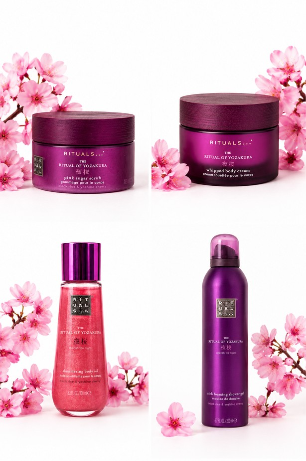
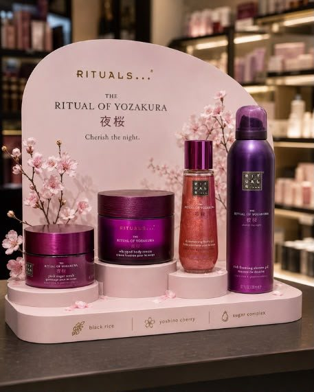
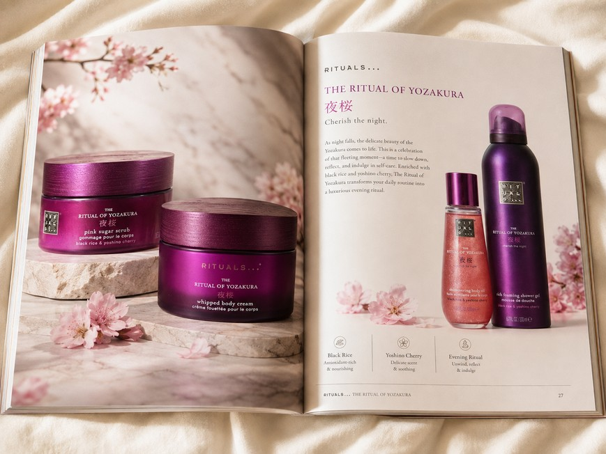
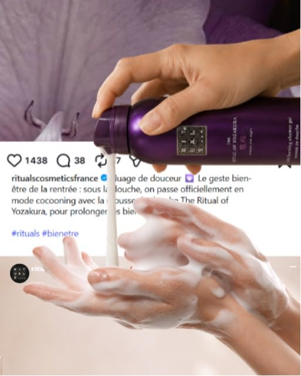
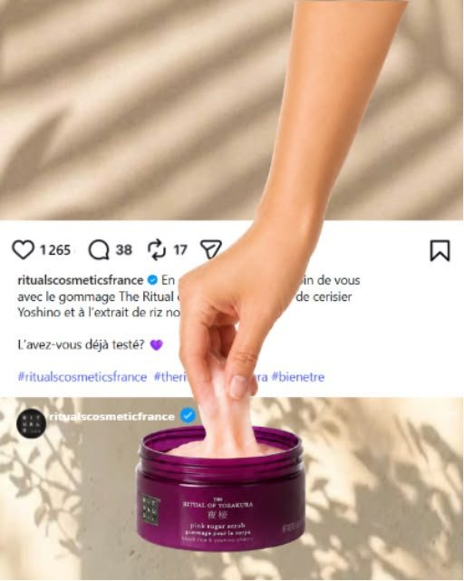
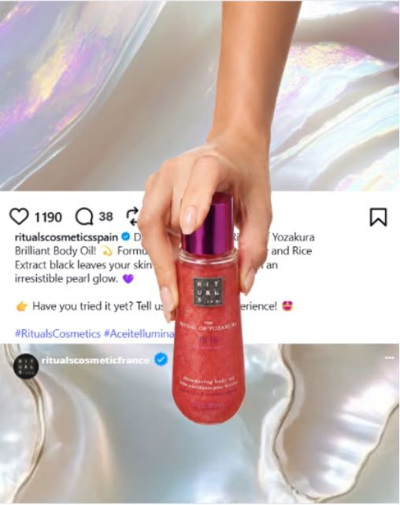

Direction artistique
Direction artistique · Direction photographique · Visual system
Territoire visuel
Un univers sensoriel, floral et premium, inspiré de la floraison nocturne du cerisier japonais.
Direction photographique
Lumière douce et diffuse, cadrages épurés et point focal produit pour renforcer la désirabilité.
Palette & matérialité
Prune, rose poudré et ivoire, associés à des matières tactiles : fleurs, pierre, verre et textures cosmétiques.
Système visuel
Un langage visuel conçu comme un système, déclinable en key visuals, social assets et applications de campagne.
Déploiement de campagne
Le visual system Yozakura décliné à travers différents points de contact de la marque.



Beyond the feed — Closer than it looks
Frame breaking · Product proximity · Depth · Interaction · Tactility



Une activation social-first qui détourne les codes du feed Instagram : le produit et le geste traversent l’interface pour créer une continuité entre écran, matière et expérience physique. Le frame breaking transforme le scroll en interaction visuelle et renforce la proximité produit.
Projet spéculatif — non commandé par Rituals.